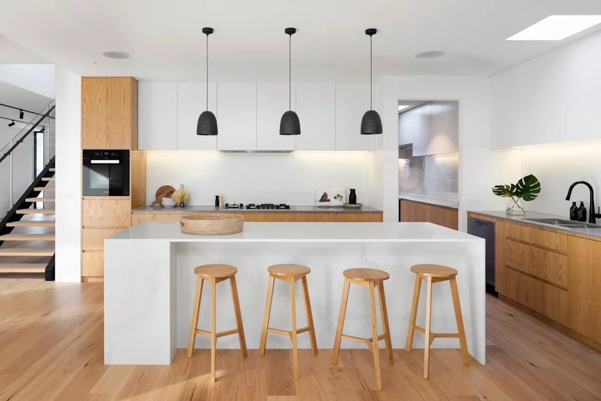
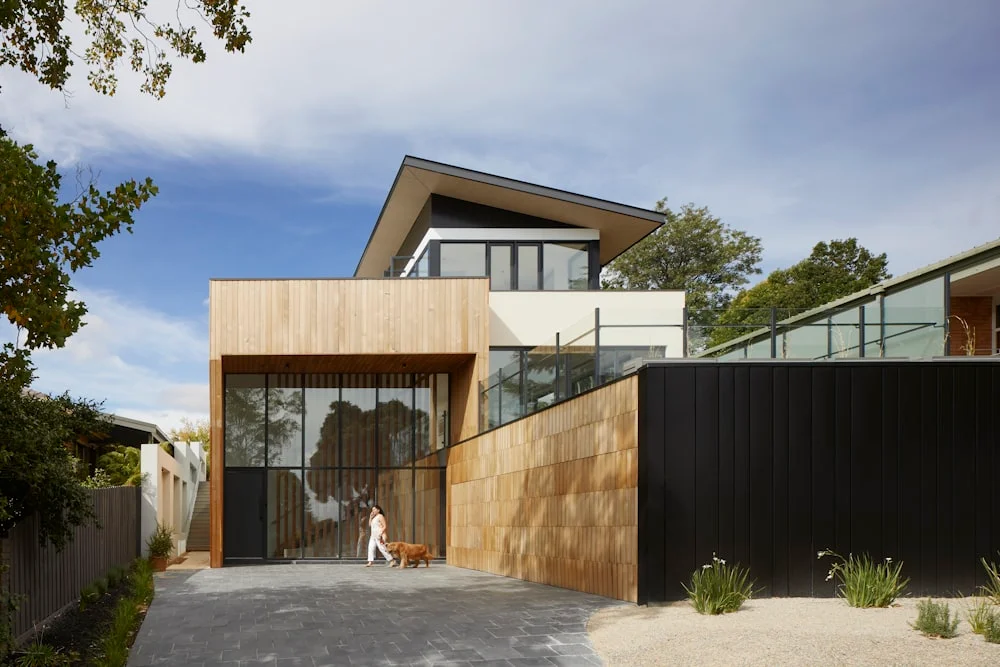

5 Keunggulan Pintu Lipat Aluminium (Folding Door) untuk Villa di Kota Batu

📌 Ringkasan Inti
Pintu lipat aluminium (folding door) memberikan solusi bukaan maksimal yang sempurna untuk villa dan hunian premium di Kota Batu, menggabungkan pencahayaan alami optimal dengan estetika arsitektur modern tanpa mengorbankan ketahanan terhadap cuaca dingin pegunungan.
- Bukaan 100% tanpa penghalang menciptakan ruang yang menyatu dengan alam terbuka.
- Profil aluminium ekstrusi tahan terhadap kelembapan tinggi dan suhu dingin Kota Batu.
- Rel stainless steel beban berat mampu menopang panel kaca tempered hingga 12mm.
- Sistem kunci multi-point meningkatkan keamanan dan kerapatan udara secara bersamaan.
- Perawatan minimal — cukup dilap dengan kain basah tanpa perlu pengecatan ulang.
Villa dan hunian premium di kawasan wisata Kota Batu kini semakin banyak yang beralih menggunakan pintu lipat aluminium (folding door) sebagai solusi bukaan utama teras dan ruang makan. Selain memberikan tampilan arsitektur yang modern dan mewah, pintu lipat juga menawarkan fungsionalitas tinggi yang sangat sesuai dengan kebutuhan villa bergaya resor di iklim pegunungan.
Berikut adalah 5 keunggulan utama yang menjadikan pintu lipat aluminium sebagai pilihan tepat untuk villa Anda di Kota Batu:
1. Bukaan Ruang 100% Tanpa Sekat Penghalang
Keunggulan paling mencolok dari pintu lipat aluminium adalah kemampuannya membuka ruang secara penuh. Ketika semua panel dilipat ke satu sisi, tidak ada kolom atau sekat yang menghalangi pandangan maupun sirkulasi udara. Hasilnya adalah transisi yang mulus antara ruang dalam dan teras luar villa.
Untuk villa di Kota Batu dengan pemandangan alam pegunungan, bukaan penuh ini menjadi nilai jual tersendiri yang sangat dicari oleh tamu penginapan maupun pembeli properti.

2. Material Aluminium Tahan Cuaca Dingin Kota Batu
Kota Batu yang terletak di ketinggian 700–1.200 mdpl memiliki suhu udara yang jauh lebih dingin dan kelembapan yang lebih tinggi dibandingkan Kota Malang. Material aluminium dengan lapisan anodized memiliki ketahanan luar biasa terhadap kondisi ini karena tidak berkarat, tidak membengkak, dan tidak lapuk meski terpapar embun pagi secara terus-menerus.
Berbeda dengan pintu kayu yang memerlukan perawatan rutin (pengecatan, pelapis anti-jamur) di lingkungan lembap, profil aluminium cukup dilap dan tetap terlihat seperti baru selama bertahun-tahun.
Paket Pintu Lipat Folding Door untuk Villa & Hunian Premium
Wujudkan teras villa impian Anda dengan pintu lipat aluminium custom ukuran, kaca tempered anti-pecah, dan rel stainless steel beban berat. Survei lokasi gratis untuk Kota Batu dan Malang Raya.
3. Rel Stainless Steel Beban Berat yang Awet
Sistem pergerakan pintu lipat bergantung pada rel bawah (floor track) dan rel atas (top track) dari material stainless steel grade 304. Rel ini mampu menopang beban panel kaca tempered tebal hingga 12mm dengan total berat panel mencapai 80–150 kg tanpa mengalami defleksi atau bunyi gesekan yang mengganggu.
Di lingkungan villa dengan aktivitas tamu yang tinggi, rel stainless anti-karat jauh lebih tahan lama dibandingkan rel besi biasa yang mudah berkarat di udara lembap pegunungan Batu.
4. Meningkatkan Nilai Estetika & Harga Jual Properti
Pintu lipat kaca aluminium memberikan kesan mewah dan modern yang identik dengan resort bintang lima. Tampilan minimalis dengan bingkai tipis (slim frame) memaksimalkan bidang kaca sehingga pemandangan alam terbuka dari dalam ruangan terasa lebih dramatis dan tidak terbatas.
"Pintu lipat aluminium kaca tempered bukan sekadar pintu — ia adalah jendela pengalaman antara ruang dalam dan keindahan alam pegunungan Kota Batu."
5. Perawatan Sangat Mudah & Efisien
Dibandingkan pintu kayu atau pintu besi, pintu lipat aluminium hampir tidak memerlukan perawatan khusus. Tidak perlu dicat ulang, tidak perlu diberi minyak anti-rayap, dan tidak akan berkarat. Cukup bersihkan rel dari debu secara berkala dan lumasi engsel dengan pelumas ringan setiap 6 bulan sekali untuk menjaga pergerakan tetap halus dan senyap.
Pertanyaan Seputar Pintu Lipat Aluminium
Harga pintu lipat aluminium kaca tempered berkisar antara Rp 1.200.000–Rp 2.500.000 per meter persegi tergantung merek profil (YKK AP/Alexindo), ketebalan kaca, dan jumlah panel. Hubungi kami untuk simulasi harga yang akurat.
Pintu lipat aluminium kami tersedia dari 2 panel hingga 10+ panel dalam satu rangkaian bukaan, menyesuaikan lebar opening dan desain arsitektur villa Anda.
Ya, tim teknisi kami berpengalaman memasang pintu lipat pada bangunan yang sudah berdiri. Kami akan melakukan pengukuran presisi dan menyesuaikan desain dengan kondisi existing struktur villa Anda.